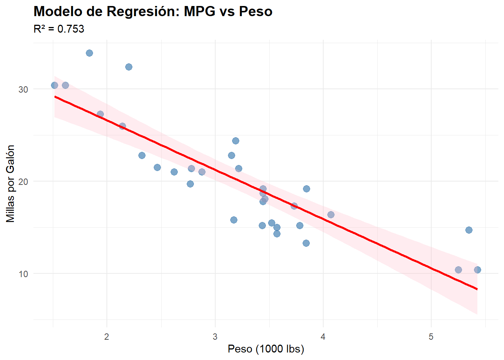
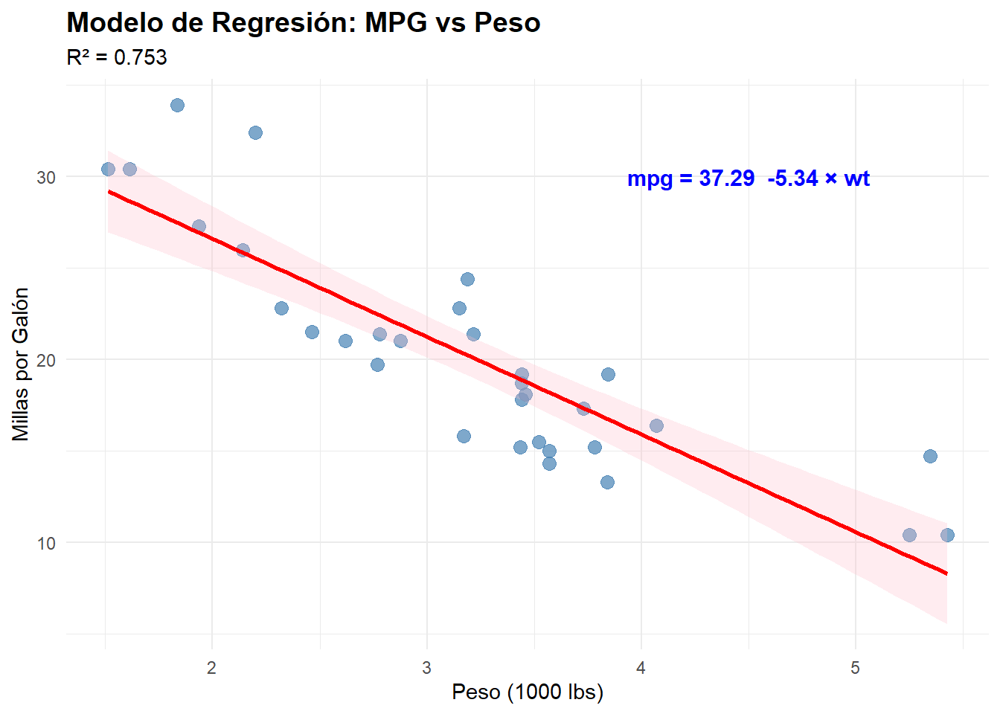
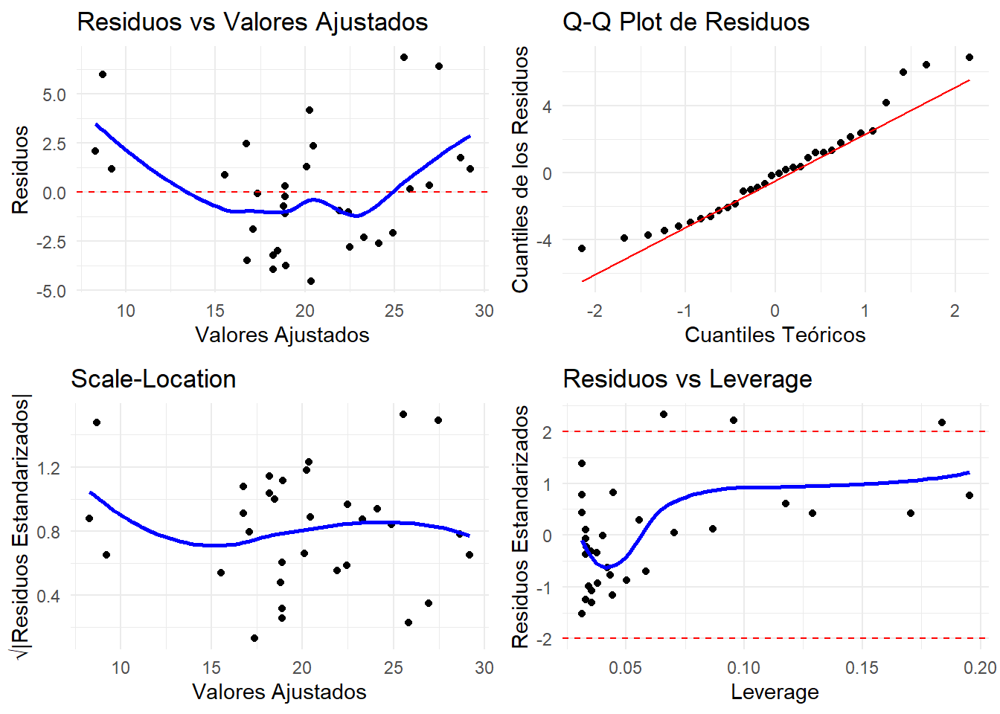
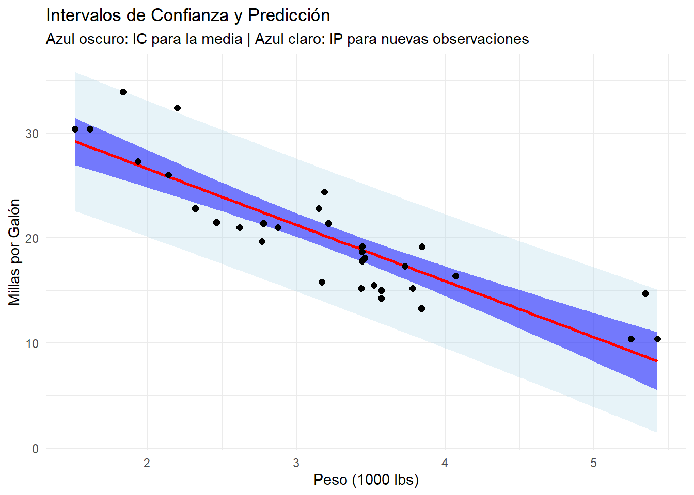
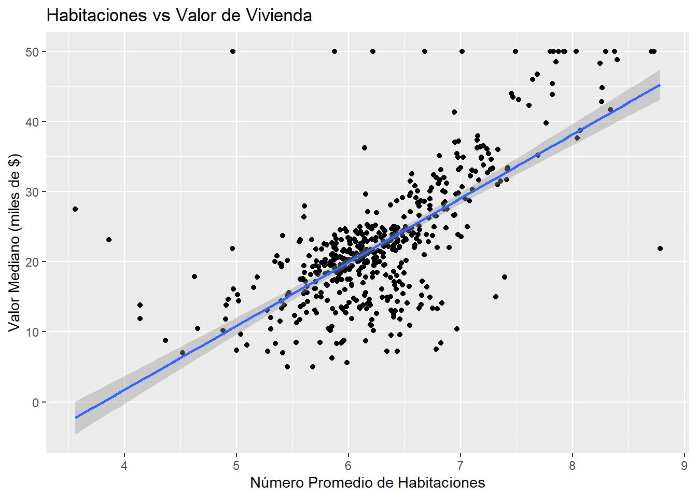

# Cargar librerías necesarias
library(tidyverse)
library(MASS)
library(car) # Para diagnósticos avanzados
library(broom) # Para resultados ordenados
library(ggplot2)
library(gridExtra) # Para múltiples gráficos
set.seed(42) # Para reproducibilidadLaboratorio 2: Regresión Lineal Simple
Modelos Estadísticos de Predicción
Objetivos del Laboratorio
Al finalizar este laboratorio, serás capaz de:
- Ajustar modelos de regresión lineal simple en R
- Interpretar coeficientes y su significancia estadística
- Evaluar la bondad de ajuste del modelo
- Verificar los supuestos de la regresión lineal
- Realizar predicciones con el modelo ajustado
Configuración Inicial
Parte 1: Fundamentos de la Regresión Lineal Simple
Modelo Teórico
La regresión lineal simple modela la relación entre una variable dependiente \(Y\) y una variable independiente \(X\):
\[Y = \beta_0 + \beta_1 X + \epsilon\]
Donde: - \(\beta_0\) = intercepto (valor de Y cuando X = 0) - \(\beta_1\) = pendiente (cambio en Y por unidad de cambio en X) - \(\epsilon\) = error aleatorio
Ejemplo Básico con Datos Simulados
# Generar datos simulados
n <- 100
x <- rnorm(n, mean = 10, sd = 2)
y <- 3 + 2*x + rnorm(n, mean = 0, sd = 1.5) # Relación: y = 3 + 2x + error
# Crear dataframe
datos_sim <- data.frame(x = x, y = y)
# Visualizar los datos
ggplot(datos_sim, aes(x = x, y = y)) +
geom_point(alpha = 0.7) +
geom_smooth(method = "lm", se = TRUE, color = "red") +
labs(title = "Datos Simulados con Relación Lineal",
x = "Variable X", y = "Variable Y") +
theme_minimal()
# Ajustar el modelo
modelo_sim <- lm(y ~ x, data = datos_sim)
# Resumen del modelo
summary(modelo_sim)
Call:
lm(formula = y ~ x, data = datos_sim)
Residuals:
Min 1Q Median 3Q Max
-2.8326 -0.7600 0.0184 0.8116 4.2936
Coefficients:
Estimate Std. Error t value Pr(>|t|)
(Intercept) 2.66376 0.67564 3.943 0.000151 ***
x 2.02037 0.06575 30.729 < 2e-16 ***
---
Signif. codes: 0 '***' 0.001 '**' 0.01 '*' 0.05 '.' 0.1 ' ' 1
Residual standard error: 1.362 on 98 degrees of freedom
Multiple R-squared: 0.906, Adjusted R-squared: 0.905
F-statistic: 944.2 on 1 and 98 DF, p-value: < 2.2e-16Interpretación de Resultados
# Extraer coeficientes
coeficientes <- coef(modelo_sim)
cat("Intercepto (β₀):", round(coeficientes[1], 3), "\n")Intercepto (β₀): 2.664 cat("Pendiente (β₁):", round(coeficientes[2], 3), "\n")Pendiente (β₁): 2.02 # Interpretación:
cat("\nInterpretación:\n")
Interpretación:cat("- Cuando X = 0, el valor esperado de Y es", round(coeficientes[1], 3), "\n")- Cuando X = 0, el valor esperado de Y es 2.664 cat("- Por cada unidad que aumenta X, Y aumenta en promedio", round(coeficientes[2], 3), "unidades\n")- Por cada unidad que aumenta X, Y aumenta en promedio 2.02 unidades# Intervalos de confianza para los coeficientes
conf_int <- confint(modelo_sim)
print(conf_int) 2.5 % 97.5 %
(Intercept) 1.322962 4.004550
x 1.889893 2.150846# R-cuadrado
r_squared <- summary(modelo_sim)$r.squared
cat("\nR²:", round(r_squared, 3))
R²: 0.906cat("\n", round(r_squared*100, 1), "% de la variabilidad en Y es explicada por X\n")
90.6 % de la variabilidad en Y es explicada por XParte 2: Ejemplo Real - Relación Peso y Consumo de Combustible
Análisis Exploratorio
# Usar dataset mtcars
data(mtcars)
# Enfocarnos en peso (wt) y millas por galón (mpg)
ggplot(mtcars, aes(x = wt, y = mpg)) +
geom_point(size = 3, alpha = 0.7) +
labs(title = "Relación entre Peso del Vehículo y Consumo de Combustible",
x = "Peso (1000 lbs)",
y = "Millas por Galón") +
theme_minimal()
# Correlación
correlation <- cor(mtcars$wt, mtcars$mpg)
cat("Correlación entre peso y MPG:", round(correlation, 3))Correlación entre peso y MPG: -0.868Ajuste del Modelo
# Ajustar modelo de regresión
modelo_mpg <- lm(mpg ~ wt, data = mtcars)
# Resumen completo
summary(modelo_mpg)
Call:
lm(formula = mpg ~ wt, data = mtcars)
Residuals:
Min 1Q Median 3Q Max
-4.5432 -2.3647 -0.1252 1.4096 6.8727
Coefficients:
Estimate Std. Error t value Pr(>|t|)
(Intercept) 37.2851 1.8776 19.858 < 2e-16 ***
wt -5.3445 0.5591 -9.559 1.29e-10 ***
---
Signif. codes: 0 '***' 0.001 '**' 0.01 '*' 0.05 '.' 0.1 ' ' 1
Residual standard error: 3.046 on 30 degrees of freedom
Multiple R-squared: 0.7528, Adjusted R-squared: 0.7446
F-statistic: 91.38 on 1 and 30 DF, p-value: 1.294e-10# Usar broom para resultados más ordenados
library(broom)
# Coeficientes con estadísticas
tidy(modelo_mpg)# A tibble: 2 × 5
term estimate std.error statistic p.value
<chr> <dbl> <dbl> <dbl> <dbl>
1 (Intercept) 37.3 1.88 19.9 8.24e-19
2 wt -5.34 0.559 -9.56 1.29e-10# Métricas del modelo
glance(modelo_mpg)# A tibble: 1 × 12
r.squared adj.r.squared sigma statistic p.value df logLik AIC BIC
<dbl> <dbl> <dbl> <dbl> <dbl> <dbl> <dbl> <dbl> <dbl>
1 0.753 0.745 3.05 91.4 1.29e-10 1 -80.0 166. 170.
# ℹ 3 more variables: deviance <dbl>, df.residual <int>, nobs <int>Análisis Detallado de Resultados
# Extraer elementos clave
coef_summary <- summary(modelo_mpg)$coefficients
r_squared <- summary(modelo_mpg)$r.squared
adj_r_squared <- summary(modelo_mpg)$adj.r.squared
sigma <- summary(modelo_mpg)$sigma
cat("=== ANÁLISIS DEL MODELO ===\n")=== ANÁLISIS DEL MODELO ===cat("Ecuación estimada: mpg =", round(coef_summary[1,1], 2),
" + (", round(coef_summary[2,1], 2), ") × wt\n\n")Ecuación estimada: mpg = 37.29 + ( -5.34 ) × wtcat("Intercepto:\n")Intercepto:cat(" Valor:", round(coef_summary[1,1], 3), "\n") Valor: 37.285 cat(" Error estándar:", round(coef_summary[1,2], 3), "\n") Error estándar: 1.878 cat(" p-valor:", round(coef_summary[1,4], 6), "\n\n") p-valor: 0 cat("Pendiente (peso):\n")Pendiente (peso):cat(" Valor:", round(coef_summary[2,1], 3), "\n") Valor: -5.344 cat(" Error estándar:", round(coef_summary[2,2], 3), "\n") Error estándar: 0.559 cat(" p-valor:", round(coef_summary[2,4], 6), "\n\n") p-valor: 0 cat("Bondad de ajuste:\n")Bondad de ajuste:cat(" R²:", round(r_squared, 3), "\n") R²: 0.753 cat(" R² ajustado:", round(adj_r_squared, 3), "\n") R² ajustado: 0.745 cat(" Error estándar residual:", round(sigma, 3), "\n") Error estándar residual: 3.046 # Interpretación práctica
cat("\n=== INTERPRETACIÓN PRÁCTICA ===\n")
=== INTERPRETACIÓN PRÁCTICA ===cat("Por cada 1000 lbs adicionales de peso, el consumo disminuye en",
abs(round(coef_summary[2,1], 2)), "millas por galón\n")Por cada 1000 lbs adicionales de peso, el consumo disminuye en 5.34 millas por galóncat("El", round(r_squared*100, 1), "% de la variación en el consumo se explica por el peso\n")El 75.3 % de la variación en el consumo se explica por el pesoVisualización del Modelo Ajustado
# Gráfico con línea de regresión y bandas de confianza
ggplot(mtcars, aes(x = wt, y = mpg)) +
geom_point(size = 3, alpha = 0.7, color = "steelblue") +
geom_smooth(method = "lm", se = TRUE, color = "red", fill = "pink", alpha = 0.3) +
labs(title = "Modelo de Regresión: MPG vs Peso",
subtitle = paste("R² =", round(r_squared, 3)),
x = "Peso (1000 lbs)",
y = "Millas por Galón") +
theme_minimal() +
theme(plot.title = element_text(size = 14, face = "bold"))
# Añadir ecuación al gráfico
eq_label <- paste("mpg =", round(coef(modelo_mpg)[1], 2),
ifelse(coef(modelo_mpg)[2] >= 0, "+", ""),
round(coef(modelo_mpg)[2], 2), "× wt")
last_plot() +
annotate("text", x = 4.5, y = 30, label = eq_label,
size = 4, color = "blue", fontface = "bold")
Parte 3: Diagnóstico del Modelo
Análisis de Residuos
# Obtener residuos y valores ajustados
modelo_data <- augment(modelo_mpg)
# Gráficos de diagnóstico
p1 <- ggplot(modelo_data, aes(x = .fitted, y = .resid)) +
geom_point() +
geom_hline(yintercept = 0, color = "red", linetype = "dashed") +
geom_smooth(se = FALSE, color = "blue") +
labs(title = "Residuos vs Valores Ajustados",
x = "Valores Ajustados", y = "Residuos") +
theme_minimal()
p2 <- ggplot(modelo_data, aes(sample = .resid)) +
stat_qq() +
stat_qq_line(color = "red") +
labs(title = "Q-Q Plot de Residuos",
x = "Cuantiles Teóricos", y = "Cuantiles de los Residuos") +
theme_minimal()
p3 <- ggplot(modelo_data, aes(x = .fitted, y = sqrt(abs(.std.resid)))) +
geom_point() +
geom_smooth(se = FALSE, color = "blue") +
labs(title = "Scale-Location",
x = "Valores Ajustados", y = "√|Residuos Estandarizados|") +
theme_minimal()
p4 <- ggplot(modelo_data, aes(x = .hat, y = .std.resid)) +
geom_point() +
geom_smooth(se = FALSE, color = "blue") +
geom_hline(yintercept = c(-2, 2), color = "red", linetype = "dashed") +
labs(title = "Residuos vs Leverage",
x = "Leverage", y = "Residuos Estandarizados") +
theme_minimal()
# Mostrar los 4 gráficos
grid.arrange(p1, p2, p3, p4, ncol = 2)
Tests de Supuestos
# Test de normalidad de residuos (Shapiro-Wilk)
shapiro_test <- shapiro.test(residuals(modelo_mpg))
cat("Test de Shapiro-Wilk para normalidad de residuos:\n")Test de Shapiro-Wilk para normalidad de residuos:cat("p-valor:", round(shapiro_test$p.value, 4), "\n")p-valor: 0.1044 if(shapiro_test$p.value > 0.05) {
cat("Conclusión: No se rechaza normalidad (p > 0.05)\n\n")
} else {
cat("Conclusión: Se rechaza normalidad (p ≤ 0.05)\n\n")
}Conclusión: No se rechaza normalidad (p > 0.05)# Test de homocedasticidad (Breusch-Pagan)
library(lmtest)
bp_test <- bptest(modelo_mpg)
cat("Test de Breusch-Pagan para homocedasticidad:\n")Test de Breusch-Pagan para homocedasticidad:cat("p-valor:", round(bp_test$p.value, 4), "\n")p-valor: 0.8406 if(bp_test$p.value > 0.05) {
cat("Conclusión: No se rechaza homocedasticidad (p > 0.05)\n\n")
} else {
cat("Conclusión: Se rechaza homocedasticidad (p ≤ 0.05)\n\n")
}Conclusión: No se rechaza homocedasticidad (p > 0.05)# Identificar puntos influyentes
influence_measures <- influence.measures(modelo_mpg)
summary(influence_measures)Potentially influential observations of
lm(formula = mpg ~ wt, data = mtcars) :
dfb.1_ dfb.wt dffit cov.r cook.d hat
Cadillac Fleetwood -0.14 0.17 0.19 1.27_* 0.02 0.17
Lincoln Continental -0.29 0.35 0.38 1.28_* 0.07 0.20_*
Chrysler Imperial -0.83 1.01_* 1.10_* 0.93 0.53 0.18
Fiat 128 0.60 -0.49 0.68 0.77_* 0.19 0.07
Toyota Corolla 0.74 -0.64 0.78_* 0.83 0.26 0.10
Lotus Europa 0.16 -0.14 0.16 1.21_* 0.01 0.13 # Distancia de Cook
cook_distances <- cooks.distance(modelo_mpg)
influential_points <- which(cook_distances > 4/nrow(mtcars))
cat("Puntos potencialmente influyentes (Cook's D > 4/n):\n")Puntos potencialmente influyentes (Cook's D > 4/n):print(rownames(mtcars)[influential_points])[1] "Chrysler Imperial" "Fiat 128" "Toyota Corolla" Parte 4: Predicciones
Realizar Predicciones
# Predicciones para nuevos valores
nuevos_pesos <- data.frame(wt = c(2.5, 3.0, 3.5, 4.0, 4.5))
# Predicción puntual
predicciones <- predict(modelo_mpg, newdata = nuevos_pesos)
# Intervalos de confianza para la media
ic_media <- predict(modelo_mpg, newdata = nuevos_pesos, interval = "confidence")
# Intervalos de predicción para nuevas observaciones
ic_prediccion <- predict(modelo_mpg, newdata = nuevos_pesos, interval = "prediction")
# Crear tabla de resultados
tabla_predicciones <- data.frame(
Peso = nuevos_pesos$wt,
MPG_Predicho = round(predicciones, 2),
IC_Inferior_Media = round(ic_media[,2], 2),
IC_Superior_Media = round(ic_media[,3], 2),
IP_Inferior = round(ic_prediccion[,2], 2),
IP_Superior = round(ic_prediccion[,3], 2)
)
print(tabla_predicciones) Peso MPG_Predicho IC_Inferior_Media IC_Superior_Media IP_Inferior IP_Superior
1 2.5 23.92 22.55 25.30 17.55 30.29
2 3.0 21.25 20.12 22.38 14.93 27.57
3 3.5 18.58 17.43 19.73 12.25 24.90
4 4.0 15.91 14.49 17.32 9.53 22.29
5 4.5 13.24 11.40 15.07 6.75 19.72Visualización de Intervalos
# Crear secuencia fina de valores para graficar
wt_seq <- seq(min(mtcars$wt), max(mtcars$wt), length.out = 100)
pred_data <- data.frame(wt = wt_seq)
# Calcular intervalos
pred_conf <- predict(modelo_mpg, newdata = pred_data, interval = "confidence")
pred_pred <- predict(modelo_mpg, newdata = pred_data, interval = "prediction")
# Combinar datos
plot_data <- data.frame(
wt = wt_seq,
fit = pred_conf[,1],
conf_lwr = pred_conf[,2],
conf_upr = pred_conf[,3],
pred_lwr = pred_pred[,2],
pred_upr = pred_pred[,3]
)
# Gráfico con intervalos
ggplot() +
# Intervalos de predicción (más amplios)
geom_ribbon(data = plot_data, aes(x = wt, ymin = pred_lwr, ymax = pred_upr),
fill = "lightblue", alpha = 0.3) +
# Intervalos de confianza (más estrechos)
geom_ribbon(data = plot_data, aes(x = wt, ymin = conf_lwr, ymax = conf_upr),
fill = "blue", alpha = 0.5) +
# Línea de regresión
geom_line(data = plot_data, aes(x = wt, y = fit), color = "red", size = 1) +
# Puntos originales
geom_point(data = mtcars, aes(x = wt, y = mpg), size = 2) +
labs(title = "Intervalos de Confianza y Predicción",
subtitle = "Azul oscuro: IC para la media | Azul claro: IP para nuevas observaciones",
x = "Peso (1000 lbs)", y = "Millas por Galón") +
theme_minimal()
Parte 5: Ejercicios Prácticos
Ejercicio 1: Dataset Boston
# Cargar dataset Boston
data(Boston)
# Analizar la relación entre 'rm' (número promedio de habitaciones)
# y 'medv' (valor mediano de las viviendas)
# Tareas:
# 1. Crear un scatterplot de rm vs medv
# 2. Ajustar un modelo de regresión lineal simple
# 3. Interpretar los coeficientes
# 4. Calcular R² y su interpretación
# 5. Verificar supuestos con gráficos de diagnóstico
# Tu código aquí:
# Ejemplo de inicio:
ggplot(Boston, aes(x = rm, y = medv)) +
geom_point() +
geom_smooth(method = "lm") +
labs(title = "Habitaciones vs Valor de Vivienda",
x = "Número Promedio de Habitaciones",
y = "Valor Mediano (miles de $)")
# Continúa el análisis...Ejercicio 2: Datos Personalizados
# Crear tu propio dataset
set.seed(123)
n <- 50
# Ejemplo: Relación entre horas de estudio y calificación
horas_estudio <- runif(n, min = 0, max = 10)
calificacion <- 60 + 3.5*horas_estudio + rnorm(n, mean = 0, sd = 5)
datos_estudio <- data.frame(
horas = horas_estudio,
calificacion = pmax(0, pmin(100, calificacion)) # Limitar entre 0 y 100
)
# Tareas:
# 1. Ajustar modelo de regresión
# 2. Interpretar el coeficiente de 'horas'
# 3. ¿Cuál sería la calificación esperada para un estudiante que estudia 6 horas?
# 4. Crear gráfico con intervalos de confianza
# Tu código aquí:Ejercicio 3: Comparación de Modelos
# Usar el dataset cars (velocidad vs distancia de frenado)
data(cars)
# Ajustar dos modelos:
# Modelo 1: dist ~ speed
# Modelo 2: sqrt(dist) ~ speed
# Tareas:
# 1. Ajustar ambos modelos
# 2. Comparar R²
# 3. Comparar gráficos de residuos
# 4. ¿Qué transformación mejora el ajuste?
# Tu código aquí:Parte 6: Conceptos Clave para Recordar
Interpretación de Coeficientes
- Intercepto (β₀): Valor esperado de Y cuando X = 0
- Pendiente (β₁): Cambio promedio en Y por unidad de cambio en X
- R²: Proporción de variabilidad en Y explicada por X
Supuestos de la Regresión Lineal
- Linealidad: Relación lineal entre X e Y
- Independencia: Observaciones independientes
- Homocedasticidad: Varianza constante de errores
- Normalidad: Errores siguen distribución normal
Diagnósticos Importantes
- Residuos vs Ajustados: Detecta no linealidad y heterocedasticidad
- Q-Q Plot: Evalúa normalidad de residuos
- Scale-Location: Evalúa homocedasticidad
- Residuos vs Leverage: Identifica puntos influyentes
Próximo Laboratorio
En el Laboratorio 3 expandiremos a regresión lineal múltiple, incluyendo selección de variables y manejo de multicolinealidad.